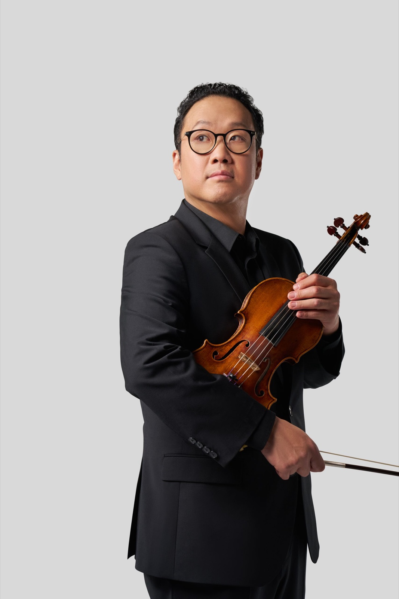

03 — Studio
A dedicated educator.
Assistant Professor of Violin at the University of California, Irvine, and on the faculty of the Interlochen Arts Camp each summer.
Dennis Kim holds a full-time appointment at the Claire Trevor School of the Arts at the University of California, Irvine, and teaches at the Interlochen Arts Camp each summer, where he is Valade Concertmaster of the World Youth Symphony Orchestra.
His former students have gone on to the Curtis Institute of Music, the Juilliard School, the Colburn School and many other conservatories and universities, and now hold positions in orchestras around the globe.

Careers of former students
Orchestras
- Los Angeles Philharmonic
- Dallas Symphony
- Pacific Symphony
- Buffalo Philharmonic
- Toronto Symphony
- Monte Carlo Philharmonic
- Hong Kong Philharmonic
- Hong Kong Sinfonietta
- Seoul Philharmonic
- KBS Symphony
- Incheon Philharmonic
- Suwon Philharmonic
- Kuopio Symphony
Conservatories and universities
- Curtis Institute of Music
- The Juilliard School
- Colburn School
- Peabody Conservatory
- Eastman School of Music
- San Francisco Conservatory
- Glenn Gould School
- Rice University
- Northwestern University
- University of Michigan
- Harvard University
- University of California, Berkeley
- University of California, Los Angeles
- University of California, Irvine
Philosophy
On teaching.
Dennis Kim’s statement on teaching will appear here, in his own words.
Competitions
Dennis Kim serves regularly on competition juries internationally.
Summers and previous posts
Each summer Dennis Kim teaches at the Interlochen Arts Camp. He has also held faculty positions across Asia, Europe and North America.
Enquiries